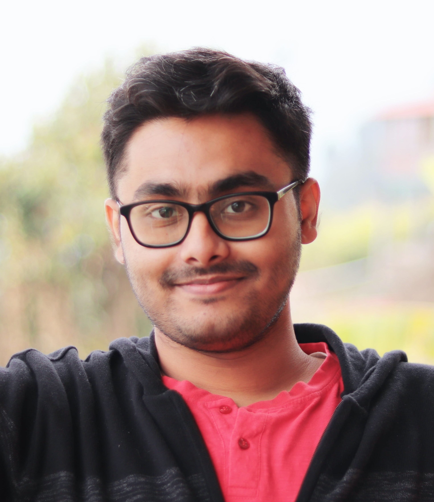

|
Aditya Ghosh
|
 |
I am a second-year Ph.D. student in Statistics at Stanford University, advised by Stefan Wager and Dominik Rothenhäusler. My research focuses on causal inference, statistical learning, and optimization, with ongoing projects in regression discontinuity and assumption-robust inference. Click here to view my CV.
Besides research, I like teaching and mentoring younger students. Click here to visit my old blog, aimed at helping high school students prepare for Mathematical Olympiads and similar competitions.
In my free time, I enjoy traveling, photography, playing chess, and experiencing new culinary delights.
|
This website is under construction.
|